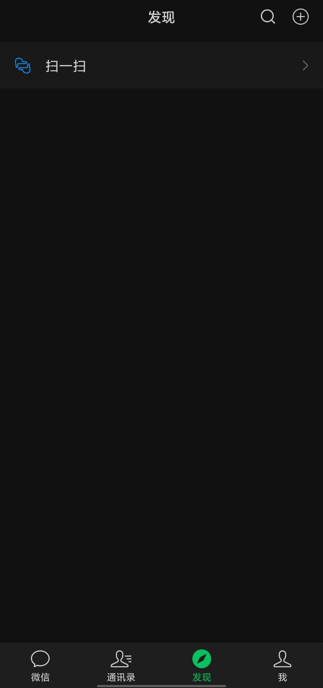

文字所承载的东西能跨越时空
模糊
文字永远只是形式，而文字所承载的东西，才是可以跨越时空的存在。
—— 爱的成文诗 | 莫比乌斯
跨越时空这个词，我第一次读来愣了一下。有一种「念天地之悠悠」，发觉自己渺小的感觉，但「独怆然而涕下」到不至于，因为我还没有那么有才华，到不了怀才不遇的悲怆。反而是一种模糊的，缓缓流动的感伤和无奈。
不用说十四年，两个月前的记忆都是模糊的。我写的一篇类似日记的文章《人生中第一次大考》记录了我在会考那一天发生的事。整篇都流露着一股淡淡的死感1，和现在的情感差异比较大，主要还是上学导致的。
现在想想，那天发生的，只有几个画面和模糊的感觉，比如我在车里看到站在外面被太阳暴晒的同学、还有那天真的很热、考点教室很干净。都是不连贯的一幅一幅画面。不过还是要感谢当时的我，写下了那些文字，不然今天连可供回忆的素材都没有。我现我还记得《爱情公寓》里，有角色说过这样一句话，好像是曾小贤吧：
「能证明我活过的就只有沙发上的屁股印了！」
可惜，我房间里还没有沙发。但是我在网上无病呻吟了很多文字2，应该能保存一段时间，证明我活过。我以前也比较喜欢在朋友圈发点东西，但那些表述相对浅显。而且一旦有确切可预测的「观众」，就难以避免地带有夸张和表演情绪，但喜欢在朋友圈表演，也是自我的一个阶段。
现在

说真的，可能是我的社交圈子问题吧，我当初就不太应该加那么多人的微信。我感觉我的朋友圈里有不少不太正常的人。虽然扫一扫在右上角的加号也能打开，但是我还是留下来了，因为我怕我手贱去点设置，打开朋友圈。虽然打开了也无妨，我已经完全把朋友圈这个功能封闭起来了，不看任何人的朋友圈，任何人不能看我的朋友圈。能减少很多看别人营造出来的完美生活的焦虑。
我最后一次发朋友圈是在七月三日。近一年左右，我很喜欢发画。手绘，板绘，甚至是一些画得很垃圾的速写。还有一些博客的文章，我会把阴阳怪气，又或是直抒胸臆骂老师引起公愤行为的文章贴在朋友圈。也许没什么人看，但是看的人，应该会觉得出了一口气吧。
现实中也有几个同学知道我的博客，有一位还在我当时证书到期的时候提醒过我，甚至跟我探讨过文章里的内容，也许他最近还在看我的博客。从之前网站出问题的时候他发现并提醒，可以推断出他大概是有看这个博客的习惯的。
记录
一切记录都是有意义的。无论是朋友圈、说说，还是一篇日记，一篇长篇大论的文章，一切记录都是有意义的。
我最近在构思博客一周年的总结文章，但还有两个月才算狭义上的一周年。但我前两天跟一位朋友复盘过我们的聊天记录，他所保存的最早的，有关「博客」这个关键词的聊天记录来自2023年9月10日，我当时搭建好了一个网站，邀请他来看看。但当时我还没有什么写作能力，搭建完了就搁置了。虽然现在也没有写作能力，但是起码能人模狗样的把话说出来。
他把聊天记录转发过来的时候，我很震惊，因为23年9月，我刚刚升入初中。
一切主观的记忆都是会随着时间的流逝，和自己的反复咀嚼、品味而被篡改的。关于23年9月搭建博客的记忆甚至没有模糊的过程，直接就被忘却了，需要提供一个锚点来回忆。我使用了那个域名作为「锚点」，那是一个国外托管网站的免费域名，于是我借着这个，回想起了一个模糊的，甚至是第三人称的画面，也有当时的感觉：对这件事一知半解，觉得有点难。
那是唯一在我大脑中保存下来的回忆了。
另一个让我震惊的事情是，我印象中我是在2024年11月，才开始了我认为能被称为博客的写作，但23年就有记录。当时我用的是Gmeek3，把语文作业里写的自认为不错的小短文贴上去了，那篇文章还被老师表扬了，说是很有感染力。具体写的是什么已经无从考证，但是我印象中有一句话：「夕阳是太阳的尸体。」这种悲观甚至有点中二的看法，竟然会被老师表扬。于是这个事成为了我对「写博客」相关回忆的锚点。但很可惜的是，那篇文章已经因为几次博客搬家丢失。
回看自己写的文字，是一个重视自我的过程。可能会从中看到这中二、偏激、幼稚、尴尬、羞耻，一旦有了这些情绪，那就证明自己是有进步的。我认为这也是文字的优越性。无论是什么样的自己，都有亲手记录下的价值。
这也是证明「我是我」的一个手段。
怎么才能证明我是我？是我的长相，还是我的穿衣风格，还是我的人际关系？
我觉得是我写下的这些文字。
无论是偏激的，还是幼稚的，都是当时自己意识的速写。脸可以被毁容，也可以整容；夏天穿短袖，冬天穿长袖；毕业了同学就几乎没任何联系。只有文字才能证明「我」的存在，它是一个人流动的意识和思想的直接抽象。比其它形式更入木三分。虽然根据开头所引用，文字只是形式，但它承载的飘渺却又厚重的东西，对每个人来说都是独一无二的，是一场与自己跨越时空的对话；而在别人看来，每一个字符都是作者精神的直接投射，能从一篇篇文章中拼凑出完整的形象。
-
非医学意义。 ↩︎
-
目前已经在此博客唧唧歪歪了231948字，约等于一本《挪威的森林》。 ↩︎
-
Gmeek，一个完全基于 Github Pages、Github Issues 和 Github Actions 的个人博客模板。详见 https://github.com/Meekdai/Gmeek. ↩︎